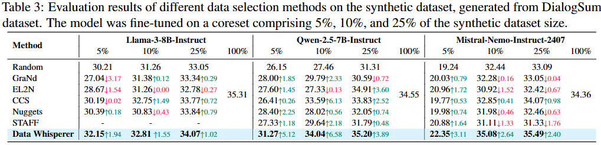

TL;DR: We propose Neural Characteristic Function Matching (NCFM), a novel dataset distillation method that reformulates the problem as minmax optimization and introduces Neural Characteristic Function Discrepancy (NCFD) to achieve lossless compression with 20.5% accuracy boost, 300× memory reduction, and 20× speedup.
Contributions
Maxmin Problem Transformation. NCFM employs a sampling network to significantly enhance the Characteristic Function's ability to capture both the original dataset and its distribution. This approach maintains the sensitivity of the Characteristic Function throughout the iterative process, thereby accelerating dataset convergence.
Computational Efficiency. NCFM achieves comparable performance while requiring only 1/300 of the GPU memory and 1/100 of the training time compared to traditional methods. Unlike kernel-based approache (MMD), this remarkable efficiency is attained without incurring the computational overhead typically associated with characteristic function loss calculations.
Lossless dataset distillation for DM. We pioneer the achievement of lossless dataset distillation through distribution matching, demonstrating that DM remains a cutting-edge approach in the field.
Experimental Results. Notably, our method achieves a 20.5% accuracy improvement on ImageSquawk, reduces GPU memory usage by more than 300×, and is 20× faster than state-of-the-art approaches. To our knowledge, this is the first work to achieve lossless compression of CIFAR-100 on a single NVIDIA 2080 Ti GPU, requiring only 2.3 GB of memory.
Neural Characteristic Function
We propose a novel Neural Characteristic Function Matching (NCFM) approach for distribution matching, formulated as a minmax optimization problem to minimize the discrepancy between synthetic dataset \(\tilde{D}\) and real dataset \(D\) while learning a robust discrepancy metric via network \(\psi\).
The Neural Characteristic Function Discrepancy (NCFD) is defined as: \[\min_{\tilde{D}} \max_{\psi} \mathbb{E}_{x \sim D, \tilde{x} \sim \tilde{D}} \int_{t} \sqrt{\text{Chf}(t; f) \, dF_{\mathcal{T}}(t; \psi)}\]
where: \[\text{Chf}(t; f) = \alpha \left( \left| \Phi_{f(x)}(t) - \Phi_{f(\tilde{x})}(t) \right|^2 \right) + (1 - \alpha) \cdot \left( 2 \left| \Phi_{f(x)}(t) \right| \left| \Phi_{f(\tilde{x})}(t) \right| \left( 1 - \cos\left( a_{f(x)}(t) - a_{f(\tilde{x})}(t) \right) \right) \right)\]
balancing amplitude and phase information to effectively align distributions.

Experimental Results
- Compared to SOTA methods, Data Whisperer demonstrates consistent superiority across varying dataset sizes. On real datasets, as illustrated in Table 2, Data Whisperer achieves higher accuracy. For instance, on 10% data of DialogSum with Qwen-2.5-7B-Instruct, Data Whisperer attains an accuracy of 43.00, surpassing the previous SOTA method, STAFF, by a significant margin of 2.46.
- Similarly, on synthetic datasets, as shown in Table 3, Data Whisperer consistently delivers the best performance across all evaluated models and data proportions, underscoring its robust generalization capabilities. Notably, with the Qwen-2.5-7B-Instruct model on 5% of the data, Data Whisperer achieves an accuracy of 31.27, outperforming the prior SOTA method, Nuggets, by a remarkable 2.87 points. 
Resource Efficiency with Lossless Performance
-
NCFM vs SOTA on CIFAR-100 (8×H100): 300× memory reduction, 20× speedup, better accuracy. Achieved lossless distillation with 2.3GB GPU memory.
-
Performance metrics (speed and memory) on A100 80G. OOM: out-of-memory. 'Reduction': NCFM's gains vs best baseline.
NCFM demonstrates superior training and memory efficiency across benchmark datasets while maintaining better performance. On CIFAR-100 (IPC 50), NCFM achieves 30× speedup over TESLA without sampling network and 20× with it. Notably, while baseline methods face OOM issues at IPC 50, NCFM requires only 1.9GB GPU memory, showcasing exceptional scalability under high IPC conditions. Additional CIFAR-10 results are in supplementary materials.
Discussions
- NCFD's training stability is vital for our minmax approach. While traditional methods use real-valued metrics, NCFM leverages complex plane optimization. Despite common instability in adversarial minmax (e.g., GANs), NCFM shows consistent stabilit backed byLe ́vy’s Convergence Theorem weak convergence guarantees, ensuring robust CF-based discrepancy across diverse conditions.
- Relationship between CFD and MMD: NCFM's Characteristic Function Discrepancy (CFD) can be viewed as a well-behaved characteristic kernel in MMD. While MMD uses fixed kernels, NCFM adaptively learns kernel parameters for optimal distribution alignment. CFD's structure encompasses MMD as a special case when matching specific moments, explaining NCFM's efficiency. Computationally, CFD operates in linear time vs MMD's quadratic complexity, making it more scalable for large datasets.
BibTeX
@inproceedings{wang2025NCFM,
title={Dataset Distillation with Neural Characteristic Function: A Minmax Perspective},
author={Shaobo Wang and Yicun Yang and Zhiyuan Liu and Chenghao Sun and Xuming Hu and Conghui He and Linfeng Zhang},
booktitle={Proceedings of the IEEE conference on computer vision and pattern recognition},
year={2025}
}